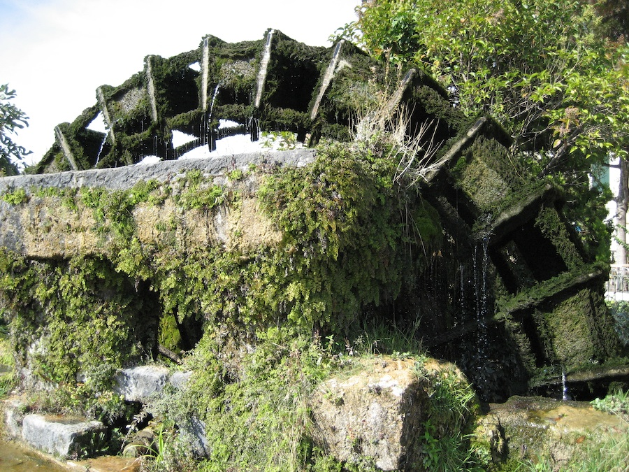

Italy & France 2007
Index
Previous
35 of 54
Next
Rating: 3
Badges:
Caption: Ilse sur le Sorgue
Name: Paul 2007-10-01 13-26-56
Image Date: 10/1/07 1:26:56 PM GMT+02:00
Aperture: f/2.8
Shutter Speed: 1/1500
Exposure Bias: 0ev
Focal Length: 6mm
Pixel Size: 2816 x 2112
File Name: Paul 2007-10-01 13-26-56.JPG
File Size: 4.23 MB
Camera Model: Canon PowerShot SD630
Master Location: Italy-France 2007
